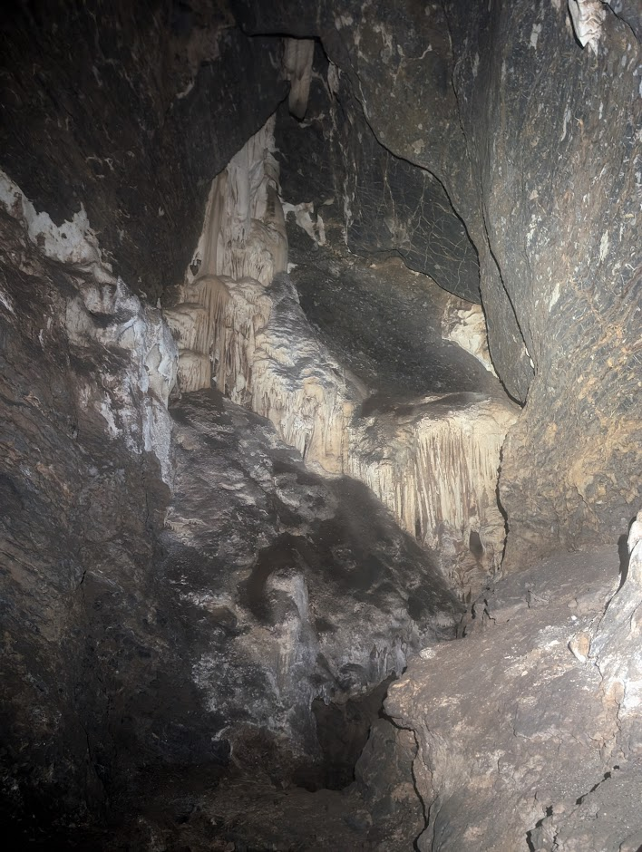

Lauren Jolliffe
Lauren Jolliffe organised Beginner Bungonia Day Trip for NUCC members.
Lauren Jolliffe organised Macquarie Pass Canyoning Trip for NUCC members.
Lauren Jolliffe organised WeeJ Vertical Day Trip for NUCC members.
Lauren Jolliffe organised NUCC Lord of the Rings Marathon for NUCC members.